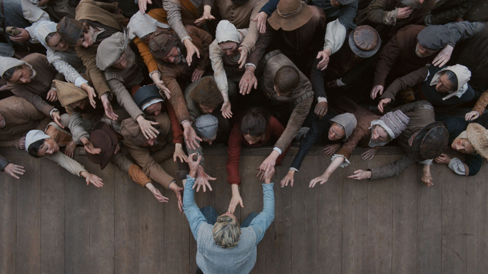
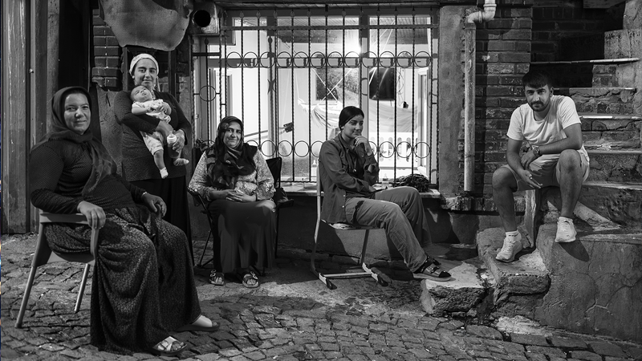
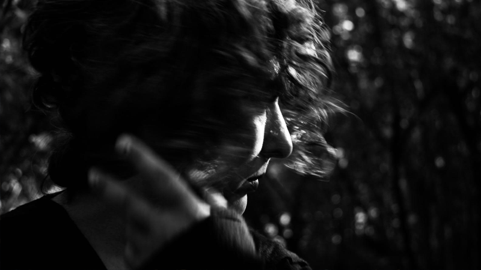
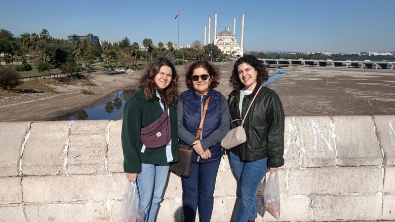
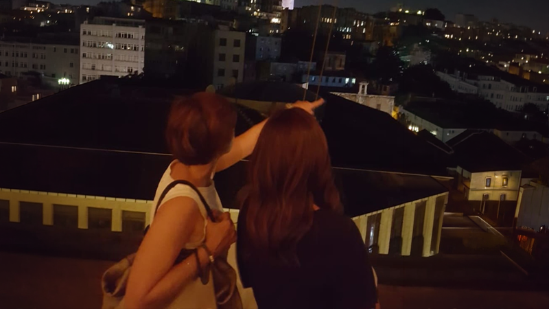
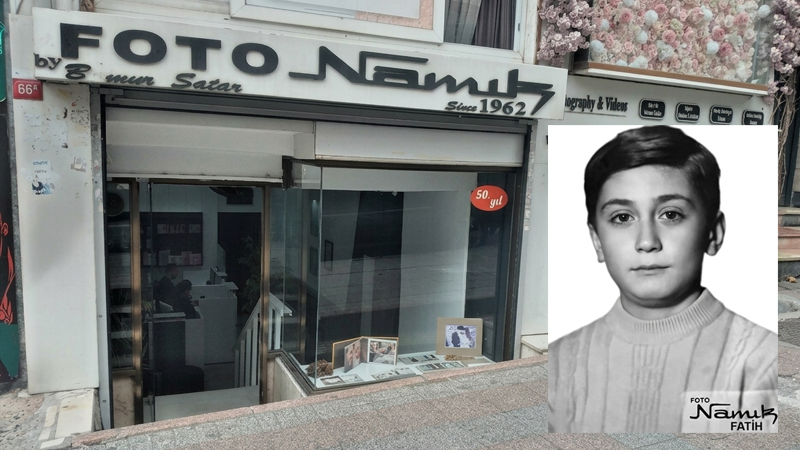
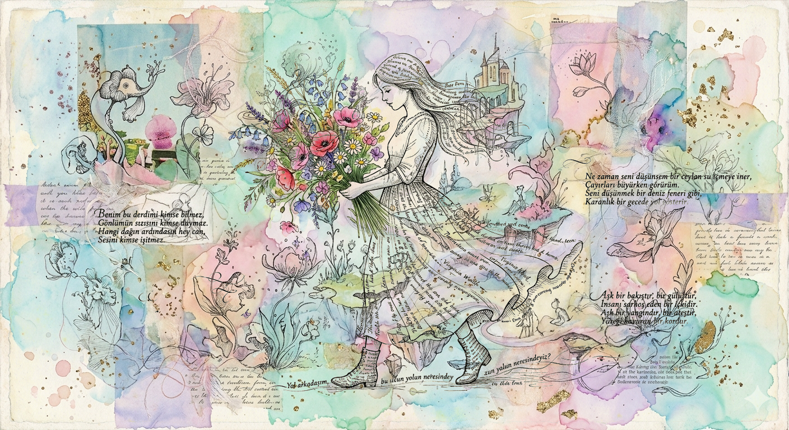
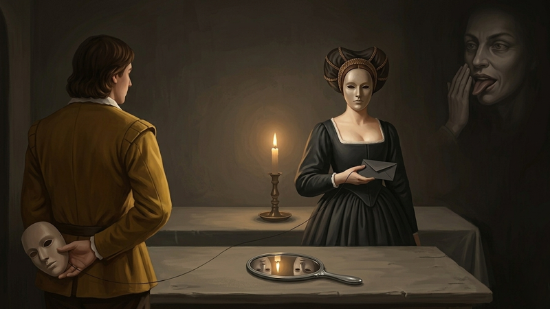
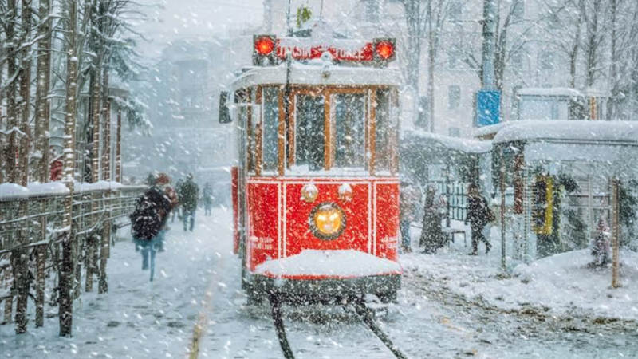

"Hamnet", 16. yüzyılın bir yansıması. Ben filmi birkaç kimliğimle seyrettim; etkilendim, heyecanlandım, duygulandım, öfkelendim ve acıları adeta yaşadım. Kısaca film bana geçti. Şifacı, onaran Agnes; analığı, aşkı, sadakati dimdik ayakta dururken içten yıkılışı hissettirdi bana.
Toplumun ve doğanın ona yüklediği görevleri kendince, zaman zaman çaresizce yerine getirdi. Analık mücadelesi mi, aşkı mı, yoksa yapması gerekenler mi onu doruğa ulaştırdı? Ben filmi seyrederken anneliğimi, evlatlığımı, aşkımı; hissettiklerimi, haksızlıkları, hak ettiklerimi, duygularımı ve gözyaşlarımı sorguladım.
Bu sorgulama süreci, aslında izleyicinin kendi yaşam aynasına bakmasıdır. Film, Agnes üzerinden sadece bir dönemi değil, insan ruhunun en karanlık ve en aydınlık dehlizlerini yeniden keşfetmemizi sağlıyor. Kaybın ağırlığı altında ezilirken, yasın bile bir tutkuya dönüşebileceğini, sevginin ise en büyük şifa olduğunu gösteriyor.
Agnes'in sessiz çığlığı, modern dünyanın gürültüsü içinde kendi sessizliğimizle yüzleşmemize olanak tanıyor. Film sona erdiğinde, üzerimizde kalan o hüzünlü tortu, aslında yaşanmışlıkların ve içimizdeki "Hamnetlerin" bıraktığı izlerden başka bir şey değil. Belki de bizi asıl etkileyen; Agnes'in bir annenin yüreğinde taşıyabileceği en ağır yükü, bir zarafet ve metanetle ölümsüzleştirmesi, ardından da kendi iç dünyasındaki fırtınaları dışarıya tek bir damla gözyaşıyla sığdırmayı başarmasıdır..

Yüzyıllar önce var olan, İstanbulun kabadayılarının, külhanbeylerinin ve mahalle kültürünün yakın döneme kadar yaşadığı bir bölgedir. Bugün ise, gerek iç gerekse dışarıdan alınan göçle kültürel yapının değiştiği ortamda yaşama savaşı veren insan hikayeleriyle doludur. Bir zamanlar hayatın kalbinin attığı, sebze meyve halinin coşkusunu yaşamış zamanın durduğu bir mahalledir Küçükpazar... Tarihi mimari dokusu dar sokakları yıkılmaya yüz tutmuş cumbalı ahşap evleri eski İstanbul ruhunu bir nebze de olsa günümüze taşımaktadır.
Zorunluluklar karşısında, eski ve unutulmaya yüz tutmuş geçmişi İstanbul’un fethine uzanan bir semte göç etmek zorunda kalan eski ahşap evlerde oturan insanlarla bugün hayata tutunmaya devam etmektedir. O tutunan insanların söyledikleri; “ Diyarbakırdan kimimiz trenle kimimiz otobüsle geldik. Denizin ne olduğunu merak ediyorduk. Bizden önce gelenler buraya yerleştiğinden biz de bağlarımızdan kopmamak adına burada yaşamaya başladık. İnsanca hayat herkesin hakkı, yaşam çetin olsada çok şükür geçinip gidiyoruz...”

“Kıyısına vardığımda sessizliğindeki gürültüyle irkildim önce. Sonra huzur buldum ve kendime geldim. Biraz soğuk, biraz ıslak, biraz da dertliydi havası. Köpürmelerinden belliydi, derdinden kıvranıyor gibiydi. Bana anlatacakları vardı. Anlatsa rahatlayacaktı belli ki. Anlar mıydım bilmiyordum, o da bilmiyordu. Bildiği tek şey anlatmak istediğiydi. Sessizce anlatmak, bölünmeden, sesini kısmadan, sözlerini kısaltmadan anlatmak istiyordu. İçinde sakladığı her ne varsa, kıyılarına vurmak istiyordu. Onun asıl derdi, anlatacak birilerini bulamayışı olabilir miydi? Kesin öyleydi… Anlatamamaktı onun tek derdi. Anlaşılmak değildi beklediği, sorgulanmadan, yargılanmadan, özgürce anlatabilmekti isteği. Kıyısına her gelen, içini döküyordu ona. ‘Sen de bir şeyler anlatmak ister misin?’ diyen hiç kimse olmamıştı bugüne kadar. Ta ki ben kıyısına varıncaya kadar. Yani bana kadar…”
Onu ilk gördüğünde anlamıştı. Kumsalında… Çıplak ayak izlerini ardında bırakarak huzuruna vardığında. Orada öylece durup sustuğunda fark etmişti. Beklediği dinleyicinin geldiğini hissetmişti. Ne anlatacağını biliyordu, nasıl anlatacağını da. Aradığı şey, kime anlatacağıydı ki ona da kavuşmuştu artık.
Karşılaştıklarında başladı bu hikâye. O sustu, öbürü dinledi sessizliğinde kendisini. O kükredi, öbürü yine sustu. Susmaktı gizli eşlikçileri ama o da çok fazla dayanamadı, geri çekildi. İçinde ne var ne yok yükledi köpüklü dalgalarına ve yolladı kıyılarına. Serdi ayaklarının altına. Anlatabilecek miydi bilmiyordu, anlaşılacak mıydı onu da bilmiyordu. Öteki de anlar mıydı bilinmiyordu. Henüz devam ediyordu dinlemeleri. Ama bildiği bir şey vardı. Ona anlatırken daha önceleri derdini, onun anlamasını hiç beklememişti. Sadece onu dinlesin istemişti. İşte sırf bu yüzden bile, onu dinlemeliymiş gibi hissediyordu şimdi. O içini döksün, ne istiyorsa anlatsın istiyordu. Gün gelir de bir gün, ondan daha fazlasını isterse, işte o zaman düşünecekti ötesini. Ne gelirmiş elinden dinlemekten başka? Ne de olsa her halükârda bakarlardı birlikte bir çaresine. Pek sık iletişimde oldukları söylenemez ancak bir konuda çok iyi anlaştıkları aşikârdı. Anlatmak onun, anlayamamak bizim derdimizdi ve biz dertlerimizde buluştuk onunla diye düşünüyordu. “Bir konuda birbirimizi çok iyi anlıyoruz artık... Anlaşılmak değil, sadece anlatmak istiyoruz. Ve ben de onun bana anlatmalarını seviyorum... Anlasam da anlamasam da bir sürü hikâye birikiyor aramızda. Biz fark etmeden hem de. Her buluştuğumuzda ondan bir şeyler dahil oluyor benim hayatıma. Ve benden de ona...” diyordu yaşadıklarından bahsederken.
Ve devam ediyordu… “Biz birbirimize bir şeyleri anlatıyorken, kendimizi anlıyoruz aslında. Kendi dilimizde susarken bile anlaşabiliyoruz onunla. Anlasak da anlamasak da önemli değil, anlaşıyoruz bu konuda. Önemli olan anlatabilmek, bir arada olabilmek… Ona yakılmış türküler eşlik ediyor bazen buluşmalarımıza. Bazen de sadece sessizlik ya da onun kıyıya olan sevdasının sesi. Kimi zaman da benim hayallerim… Ne hikâyeler birikiyor bilseniz ne hikâyeler, bu buluşmalarımızda... Kumsalda yakılan ateş etrafında bazen, bazen de bir dağın başında anlatılıyor. Bazen de ondan uzaklarda otururken anlatılası hikâyelerden oluveriyorlar… Karadeniz'den artan, bize kalan hikâyeler… Pek sık bir arada olamıyoruz onunla. Onun gidemediği, benim istesem de onu götüremediğim yerler var. Ama her zaman ona ulaşabilme ihtimalim de var. Ve yaşananlar… Bütün hikâyede aslında her zaman o var. Hayat… Çünkü iki ayrı şehirde de anlatılsa, kıyısında hep o var…“ diyordu bir söyleşisinde. Şimdi söyleyecek bütün sözlerini biriktirmeye, biriktirdiklerini demlemeye, demlediklerini anlatmadan önce bir süre daha bekletmeye ihtiyacı vardı ve bütün bunlar için de yeniden ona… Her şeyin başladığı o yere giderken, her şeyin bittiği bu yerden, hiçbir şey götürmeyecekti yanında. Sadece yazacaklarıyla çıkacaktı yola…

Nebil Özgentürk, Adana için diyor ki herkes Adana’yı insanların yolda adam dövdüğü, kestiği, belinde tabanca ile dolaştığı bir şehir sanır ama Adana Festival, sanat , bereketli topraklar, bereketli edebiyat şehridir
Evet gerçekten öyleymiş ben tam 2 sene Adana’da yaşadım sıcağına rağmen, sıcak derken havasının ve insanın sıcaklığı ile.
İstanbul dışında başka yerde yaşayamam diyen ben 2 sene sonra Adana’ dan dönerken ağlamadım ama çok üzgün döndüm.
Taşındığımız ilk gün alt komşunun bize meyve ve yemek getirmesi sonrasında da hep bahçeden topladığı her şeyi bizimle paylaşması, eşim hastalandığında komşumun, eşinin, başka bir komşunun yardımcının bizi hastaneye götürme yarışı ve ayrılırken komşumun ağlayarak bizi uğurlaması.
Anlatılmaz yaşanır dedikleri bu.
Adana’da hiç gitmediğim kadar konsere gittim, tiyatroya gittim portakal festivali zamanı müzeler ve tabii ki portakal çiçeği kokan sokaklar ve gerçekten portakal çiçeği kokuyor
İçinize çeke çeke yürüyün yollarda, her yer düz, Atatürk parkımız muhteşem bir park, dut zamanı yürüyüş yaparken yenen dutlar.
Sonrası Adana’ da deniz olur mu? tabii ki olur Karataş günleri, Zuhal abla, Suat abi ile deniz kenarı gün batımı zamanları, Yumurtalık bomboş sahil şezlong şemsiye parasız, sahiller herkese açık.
Ve İstanbul dan turlar ile gidebileceğiniz şehirler 2 saat mesafede bu sayede Gaziantep, Şanlıurfa Mersin, Tarsus ve İskenderun gördük
İşte böyle şimdilik bu kadar Adana’yı ve çevresini anlatmaya devam…

Sınır kişinin kendisine ait alanı korumasını sağlayan kurallar bütünüdür. Öyle insanlar gelir ki hayatınıza tam da olmasını istediğiniz anda dokunuverir ruhunuza, kimi ise tam tersi fark etmeden araya inmiş görünmez perde gibidir, net değil, belirsiz, endişe verici. Sınır koyarsınız istemsizce. Oysa yüreğinize huzur veren, en zor anınızda tüy gibi hafiflemenize destek olan, yıllarca görmeseniz bile sizi bir tek sözü ile sarmalayan insanlar vardır onlara sıkıca sarılın.
Dost sormaz, hisseder, sorgulamaz, kabuldedir. Varlığı ile yukarıya taşır, bilirsin ki seninle aynı frekanstadır. Salaş bir çay ocağında içilen kahvede, çayda, bölüşülen simitte seninle olmanın keyfine varır. Anlatabilirsin ne var ne yoksa, belki hatalı, yanlış düşüncelerdesindir sana yol gösteren olur, görmek istemediklerinde cesaret verir haydi der. Mutlulukların onun da mutluluğu olur, onda var bende neden olmasın düşüncesi aklından bile geçmez eminsindir, yüzünün gülümsemesi ona da ayna olur, kendini görürsün bir an, içini sıcacık duygular kaplar. Hayır demeyi bilmez dostlar çünkü onlar engel tanımaz,elbet bir çözümle yanınızdadır.Yaş aldıkça kıymeti daha iyi anlaşılan, sınırı olmayan dostluklara...

Çocukluğumda yaşadığım bazı şeyleri, bu yaşımda tekrar yaşamak, ya da yaşamak demeyeyim, bu yaşımda tekrar karşıma çıkmaları bir tesadüf değil diye düşünüyorum.
1960’lı yıllarda çocukluk, 1970’li yıllarda ise gençlik yaşamış biri olarak, o günlerin kısıtlı imkanlarında, kendi hobilerimizi kendi imkanlarımız dahilinde oluşturmaya çalışırdık. Çünkü, o zamanların vitrinlerinde, genelde babalar memur ya da işçi, anneler ise ev kadınıydı. Gelir belli ve mütevazı idi.
Benim merakım ya da hobim diyelim, fotoğraf çekmekti. Ama bunun için sünnet düğünümde hediye olarak gelen ve hiçbir işe yaramayan iki fotoğraf makinesi dışında, elimde hiçbir şey yoktu. Elimde olmayan birçok materyal ise etrafımda çoktu. Mesela, Eniştemin (halamın eşi), bir iki tane fotoğraf makinesi, amcamın ise sekiz mm kamerası vardı. Benim için bunlara sahip olmak rüya gibi bir şeydi. Ama fotoğraf çekme rüyam, babamın bana aldığı Lubitel2 makinesi ile gerçek oldu. 125 TL’ye alınmış, bir memurun bütçesini fazlasıyla zorlayacak bir harcamaydı. Gerek amcamın sekiz mm kamerası, gerekse eniştemin hem fotoğraf makineleri, hem de 16 mm film oynatma makineleri ile ilgili diğer yazılarımda anlatacağım çok şey olacak…
Bunları özellikle belirtmemin sebebini biraz sonra sanırım ben anlatmış olacağım, sizler de anlamış…
Serde merak, serde geçmişe özlem, serde dönemimde yaşamış insanların vücuda getirdiği eserler olunca, ben kendimi kaybediyorum. İki gün önce de öyle oldu.
Oğlumla Hilmi Nakipoğlu’nun kamera müzesine gittik, Bakırköy’e… Tesadüf ki, müzenin kurucusu o güzel insan da oradaydı. Ayrıca, Beypazarı’ndan gelmiş, Beypazarı’nda buna benzer bir müze kurmak isteyen bir kişi için ön araştırma yapıp, bilgi alan üç değerli insan daha vardı. Beypazarı’nda müze kurmak isteyen kişinin yaklaşık bin adet materyali varmış. Yolları açık olsun.
Müzeyi gezerken birçok şey yaşadım. Ama tüylerimi diken diken eden iki şeyi unutamam. Birincisi, babamın bana memur maaşının önemli bir bölümüyle aldığı Lubitel2 fotoğraf makinesini, diğeri ise merhum Namık Satar’ın (Foto Namık) müzeye bağışladığı fotoğraf makinelerini. Merhum Namık Satar’ın tüylerimi diken diken etmesinin sebebi ise, müzeye bağışladığı fotoğraf makinelerinden biriyle muhtemelen benim ilk vesikalık fotoğrafımı çekmesiydi. Ama hangi makine, onu bilemiyoruz… Bahse konu ettiğim ilk vesikalık fotoğrafım, bu makalemin altında…
Bu yaşanmışlığın benim için en önemli yanı, bunu mesleği fotoğrafçılık ve kameramanlık olan oğlumla birlikte yaşamam…
Hepimiz için zaman hızlı akıyordu. Yaşanılanlar tarifsizdi. Yaşadığımız şehir, kendine uzaklaşmıştı. Şehrin davranışı benzersizdi. Mevsim kendi etrafında dans ederken zamanı başı boş bırakmıştı.
Koca şehir, herkes aynıydı..
Koca şehir, hiçbir şey aynı değildi.
Yabancılaşmak, uzaklaşmanın kardeşi gibi; el ele duvardan atlıyordu.
Biz birkaç dost, yabancılaşan zamana inat ediyorduk. Benzersiz sohbetlerimizle en sevdiğimiz kahve fincanlarımız ile kahvelerimizi yudumluyorduk.
Değişen her şeye inat, değişmeyen değerlerimizle burada ve birlikteyiz.

Başlangıçlar bana umudu, sevgiyi ve cesareti çağrıştırır. Bizi heyecanlandıran, enerjimizi tetikleyen dönemlerdir. Bazen o heyecan ve niyet bize ivme kazandırır, olmayacakları oldurur. İnsan ilişkilerinde ya da iş projelerinde bu heyecan dalgası bizi içine çeker. Ama her başlangıç hayrımıza değildir ve o heyecanın mum gibi söndüğü durumlar da hepimizin başına gelmiştir.
Akdenizli olmamız nedeniyle bizim toprakların insanları başlangıçlar konusunda çok heyecanlıdır. Ancak bu heyecan genellikle geçicidir. Öğrenciler sene başında okula büyük bir özlemle başlar ama ilk yazılılardan sonra o enerji yavaş yavaş azalır. Yeni bir çalışan çok motivedir fakat bir ay sonra o heves küçülmeye başlar. Sadece proje üreten ama biri bittiğinde hemen diğerine geçen, sürekli bir arayış içinde olan insanlar da vardır. Keşke üzerinde yaşayan canlılara ve insanlığa katkısı olan, devamlılığı bulunan başlangıçlar ve yenilenmeler olsa.
Doğayı düşündüğümde, her bitiş bir diğerine yol açar ve hayat verir. Doğa hep döngülerden doğar, gelişir ve dönüşür. Dünya var olduğundan beri hayat hep başlamış, bitmiş ama yaşam her zaman var olmuştur. Bitiş noktası, aslında yaşamın başlangıç noktasıdır. Bu yüzden hiçbir bitiş yolun sonu veya bir kayıp gibi gelmemeli. Okul bittiyse sonraki yaşamınız, bir proje bittiyse yeni işlerin alanı açılıyor demektir. Hayatınızdan biri çıktıysa, bu da ilişkilerin tamamladığı bir döngüdür. Masallar da belki bu yüzden "bir varmış, bir yokmuş" diye başlar.

Hayatımızın her alanında var olan bir davranış mı desem bir ifade şekli mi desem bilemedim; herkesin, hepimizin bir şekilde kullandığı bir yöntem. Beyazı var, pembesi var, büyük olanı var, küçük olanı var, “zararsız” olanı var, patolojik olanı var. kanıtlanabileni var, kanıtlanamayanı var. kanıtlansa da üstü örtüleni var ki en çok ona maruz kalıyoruz sanırım. Yapmayan yok; “ben asla yapmadım” diyen varsa emin olun gerçek değil. Gerçek değilse nedir elbette YALAN.
Ortalama bir insan günde bir ile dört, 60 yaşına kadar ortalama 87600 yalan söylüyormuş. Bu bilgi doğru mu bilmiyorum, ben google’ın yalancısıyım 😊 Gerçek çıplaktır; çirkin görünebilir, acıtabilir, nettir, süslenmesine gerek yoktur, olduğu gibidir. Yalan ise süslenir, detaylandırılır, hikayeleştirilir. Eğlencelidir, heyecanlandırır. Katman katmandır, sonu gelmez. En çok kime yalan söylüyoruz dersiniz; elbette en yakınlarımıza, en sevdiklerimize, en çok birlikte zaman geçirdiğimiz insanlara. En büyük yalan da size yalan üstüne yalan söyleyen kişinin yalanı ortaya çıktığında “seni üzmemek için yalan söyledim” demesidir. O sadece yalanı ortaya çıktığı için üzülüyordur ve büyük olasılıkla yalanlar söylemeye devam edecektir. “Yalancının mumu yatsıya kadar yanar” diye bir atasözümüz var ya, o da yalan. Günlerce, aylarca, yıllarca süren yalanlar var. örnek mi; etrafınıza bir bakın ya da haberlere bir göz atın.
Yalanı çok iyi anlatan iki eğlenceli film önermek isterim: biri, Younger, aldatılan, evliliği sona eren 40 yaşında bir kadının yaşı konusunda “küçük” bir yalan söyleyerek kariyerine tekrar başlamasını anlatan güzel bir hikaye. İkincisi, Ricky Gervais’in oynadığı 2009 yapımı Yalanın İcadı.

Laleli’den dünyaya giden bir tramvaydayız. Gri bir aralık sabahı. Hava soğuk. Çok soğuk hem de. Genç bir çift biniyor duraktan. Kızın mavi beresine sığmayan kıvırcık, kızıl saçlarından düşen bukleler yüzünü gizliyor. Karşısındaki genç adamla konuşuyor. Elindeki kar küresini görüyorum. Çok severim kar kürelerini. Tramvay Çemberlitaş’tan Sultanahmet’e doğru ilerlerken kar atıştırmaya başlıyor. Bir çocuk neşesi dolduruyor tramvayı. “Kar yağıyor, kar yağıyor!”
Sonra senin sesini duyuyorum, “Bir bakmışsın kış geçmiş, kapa gözünü. Ve hayal et. Hep gitmek istediğimiz şehirdeyiz seninle. Çiçekçiler, çalgıcılar var Pont-neuf köprüsünün üzerinde. Neşeli bir şarkı çalıyor. Yaşlı bir çift sanki hiç kimse yokmuş gibi dans ediyor. Elimden tutup çekiyorsun beni kendine aniden. Benimle dans eder misiniz güzel bayan” diyorsun. İtiraz edemeden kendimi senin kollarında buluyorum. Mis gibi leylak kokuyor her yer. Mutluyuz. Aşk gibi bir şey oluyor o sıcak yaz akşamı. Bir bakmışsın kış geçmiş. Gözlerimi açıyorum. Tramvay Sirkeci’ye yaklaşıyor. Kar hızını arttırıyor.
Not: Cemal Süreya’nın Üvercinka şiirinin, Laleli’den dünyaya giden bir tramvaydayız dizesinden ilhamla yazılmıştır.